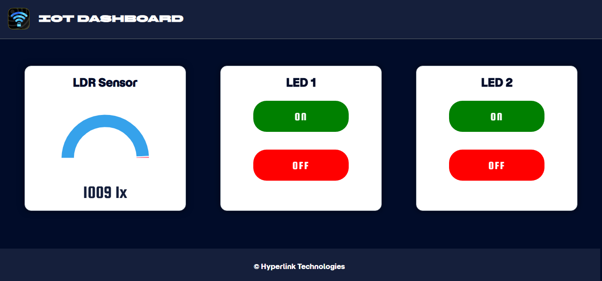
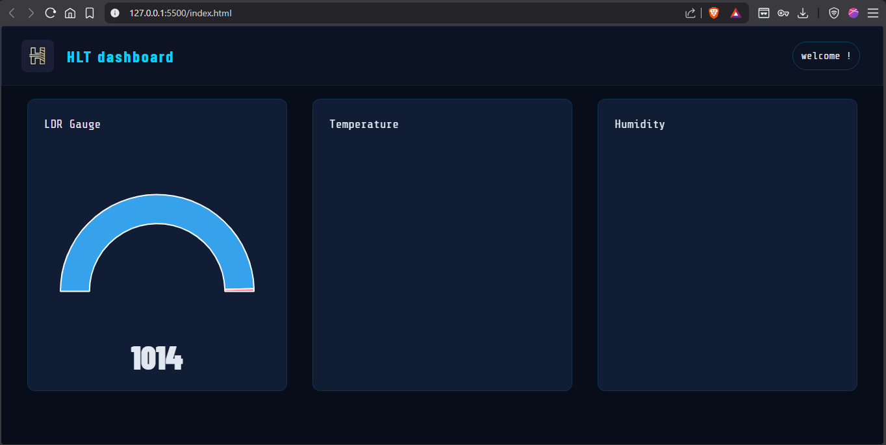

Industrial Monitoring
Track machinery health, production KPIs, vibration, and temperature across your entire plant floor with millisecond precision.
Industrial IOT Platform
Iris IoT Platform transforms your industrial data into powerful, actionable dashboards — built for scale, speed, and reliability.

platform overview
A centralized IoT platform designed to simplify the way you connect, monitor, and manage your industrial infrastructure. Iris brings together data from sensors, machines, and edge devices into a unified dashboard, enabling real-time visibility across all operations.
The platform provides scalable tools to collect, process, and visualize data with precision. Built with reliability and performance at its core, the platform ensures secure data transmission, minimal latency, and high availability — making it ideal for mission-critical industrial environments.
KEY CAPABILITIES
Purpose-built features designed for the demands of industrial IoT environments — from the edge to the cloud.
Build fully customizable dashboards with live data widgets, trend charts, gauges, and maps — all updating in milliseconds.
Define threshold-based or anomaly-driven alerts. Receive instant notifications via email, SMS, or webhook integrations.
Monitor hundreds of heterogeneous devices from a single interface. Track status, telemetry, and health in real time.
Serve multiple organizations from one platform. Tenant isolation ensures clients see only their own data.
Access your platform from anywhere — browser, tablet, or mobile. No VPN or on-prem setup required.
DASHBOARD PREVIEW
Customize every widget to match your workflow. Choose from gauges, time-series graphs, heatmaps, device grids, and more — all in a drag-and-drop builder.


HOW IT WORKS
Customize every widget to match your workflow. Choose from gauges, time-series graphs, heatmaps, device grids, and more — all in a drag-and-drop builder.
Plug in via the Iris Gateway supporting Modbus, MQTT, and more. Zero-code setup.
Encrypted, reliable data pipelines stream telemetry to the cloud in real time.
Drag-and-drop widgets for your KPIs, trends, and device states — live.
Smart rules trigger instant notifications so your team can respond before failures occur.
USE CASES
From factory floors to utility networks, Iris adapts to your operational context with purpose-built templates.
Track machinery health, production KPIs, vibration, and temperature across your entire plant floor with millisecond precision.